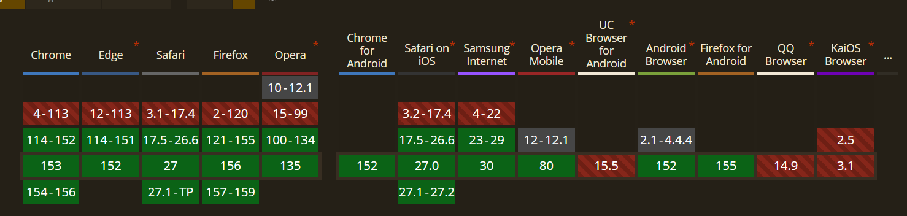

Explication
Le comportement par défaut du texte est de remplir la ligne jusqu'au bout avant de passer à la suivante, ce qui crée souvent des veuves (un mot seul sur la dernière ligne) ou des titres déséquilibrés. La propriété text-wrap avec les valeurs balance et pretty confie au navigateur le calcul d'un rendu typographique parfaitement harmonieux.
Démo Live
Redimensionnez la boîte en tirant sur le bord droit. Observez comment le titre et le paragraphe de droite se réorganisent intelligemment pour éviter les mots orphelins et les asymétries, contrairement à la colonne de gauche.
Un titre de démonstration qui risque de se casser très mal
Voici un paragraphe de texte classique. Si vous redimensionnez la largeur de cette boîte, il y a de très fortes chances qu'un mot se retrouve tout seul sur la ligne du bas.
Un titre de démonstration qui risque de se casser très mal
Voici un paragraphe de texte classique. Si vous redimensionnez la largeur de cette boîte, il y a de très fortes chances qu'un mot se retrouve tout seul sur la ligne du bas.
Code CSS
.balanced-title {
text-wrap: balance;
}
.pretty-text {
text-wrap: pretty;
}Compatibilité et Fallback

Fallback : Il s'agit d'une amélioration progressive pure. Sur les anciens navigateurs, la propriété sera simplement ignorée et le texte ira à la ligne de manière classique. L'interface reste parfaitement lisible sans nécessiter aucun code de secours (polyfill ou JavaScript).